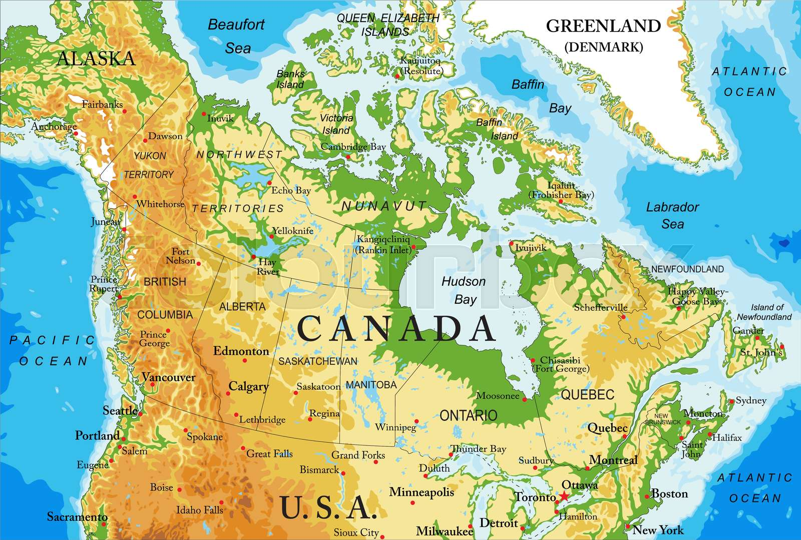

Geografia
A geografia do Canadá é marcada por uma vasta extensão territorial e uma grande diversidade de paisagens.
Localização e Extensão: O Canadá está localizado na América do Norte, sendo o segundo maior país do mundo em área total, depois da Rússia. Estende-se desde o Oceano Atlântico a leste, até o Oceano Pacífico a oeste, e ao norte até o Oceano Ártico.
Regiões Geográficas: O Canadá pode ser dividido em várias regiões geográficas distintas:
Cordilheira do Pacífico: Localizada na costa oeste, incluindo as Montanhas Rochosas.
Planícies Centrais: Amplas áreas de terras planas no sul das províncias das pradarias.
Escudos Canadenses: Região de rochas antigas e lagos, cobrindo grande parte do leste e centro do Canadá.
Ártico: Região no extremo norte do país, caracterizada por tundras e vastos espaços de gelo.
Clima: O clima do Canadá varia amplamente devido à sua vasta extensão territorial e diferentes influências climáticas. No norte, o clima é predominantemente ártico ou subártico, enquanto nas regiões sul o clima pode ser temperado, continental ou oceânico, dependendo da localização.
Recursos Naturais: O Canadá é rico em recursos naturais, incluindo vastas florestas, importantes reservas de água doce, minerais (como níquel, urânio e ouro), além de ser um dos maiores produtores mundiais de petróleo.
Demografia e Uso da Terra: A maior parte da população canadense vive perto da fronteira com os Estados Unidos, principalmente nas províncias ao sul. Grande parte do território do Canadá é coberto por florestas, especialmente nas regiões norte e oeste.
Impactos Ambientais: O Canadá enfrenta desafios ambientais significativos, como o aquecimento global, o derretimento do gelo ártico, questões relacionadas à exploração de recursos naturais e a gestão sustentável das florestas.
|
|
|
|
|
|
|
|
|
|

|